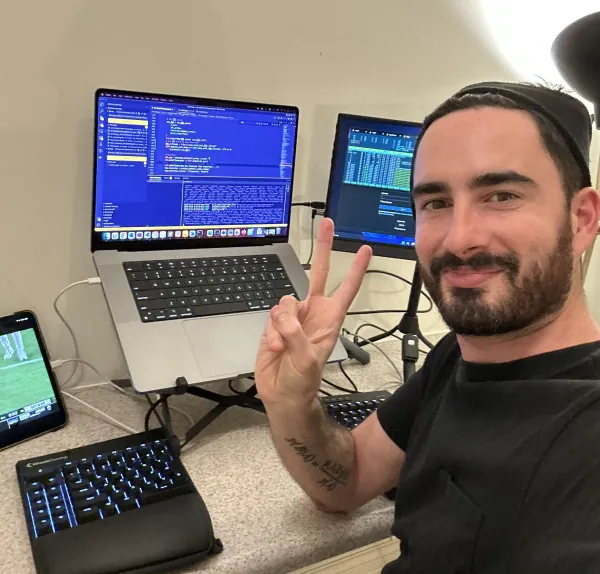

Hi, I'm David
I specialize in AI agents and agentic frameworks - building autonomous systems that think and act independently. As an AI/ML engineer with expertise in LLM fine-tuning and generative AI, I create cutting-edge agentic systems that push the boundaries of what's possible with autonomous AI.

Check what data leaks from your browser to websites
Using GPT-2 and StyleGAN to generate fake wines
Check out samples of my code
Latest Writing
-
A 5 GB Docker Image for a 7.4 MB Model
June 13, 2026
A deploy hung for fifteen minutes. The cause was 3.9 GB of NVIDIA CUDA wheels being installed for a model that runs on CPU. This is the side quest from the HDR project: why PyTorch ships a CUDA runtime you don't ask for, what inference actually needs, and what I learned porting GMNet to tinygrad by hand and proving the outputs identical to a fraction of a pixel.
-
Where the Branch Commits
May 14, 2026
When a tiny prompt edit flips an LLM's greedy output onto a different token, where in the forward pass is that flip actually committed? Across 82 cases on 8 open models, every case has a findable residual-stream position where patching from the unedited run restores the original token. Part 3 of the Nearby Prompts series.
-
Restoring HDR to AI-Edited iPhone Photos: The Long Version
May 2, 2026
An iPhone HDR JPEG is two images hiding inside one file, stitched together by a spec war between Google and Apple. AI editors throw the second one away. This is the story of reconstructing it: gain maps, APP2 segments hand-assembled from iPhone hex dumps, a CNN from ICLR 2025, a 5 GB Docker build caused by a 7.4 MB model, and the iOS Safari bug that silently disables HDR rendering if your image lives inside the wrong CSS container.